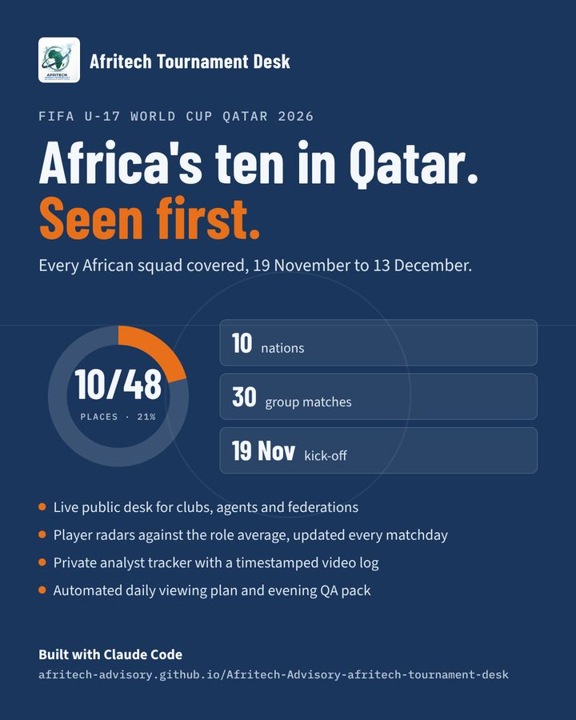
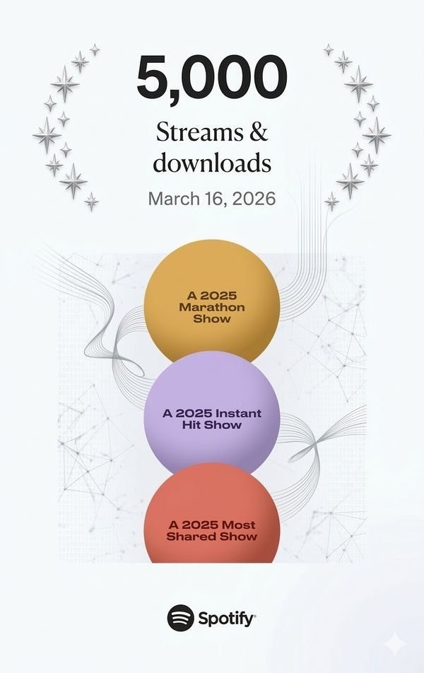

Afritech Sports · Nairobi, KenyaAfritech Sports · Nairobi, KenyaAfritech Sports · Nairobi, KenyaAfritech Sports · Nairóbi, Quênia
Innovation: what we build and run ourselves.Innovation : ce que nous créons et faisons vivre nous-mêmes.Ubunifu: tunachojenga na kuendesha wenyewe.Inovação: o que criamos e conduzimos.
Projects that put African football and its players in front of the people who make decisions.Des projets qui mettent le football africain et ses joueurs sous les yeux de ceux qui décident.Miradi inayoweka soka la Afrika na wachezaji wake mbele ya watu wanaofanya maamuzi.Projetos que colocam o futebol africano e seus jogadores diante de quem toma as decisões.
Tell us what you need and we'll come back to you.Dites-nous ce dont vous avez besoin et nous reviendrons vers vous.Tuambie unachohitaji na tutawasiliana nawe.Conte o que você precisa e retornaremos o contato.
LatestActualitésHabari mpyaÚltimas notícias

Africa at the FIFA U-17 World Cup, Qatar 2026L'Afrique à la Coupe du monde U-17 de la FIFA, Qatar 2026Afrika kwenye Kombe la Dunia la FIFA U-17, Qatar 2026A África na Copa do Mundo Sub-17 da FIFA, Catar 2026
From 19 November to 13 December 2026 our Tournament Desk follows Africa's ten nations match by match, tagging key moments and scoring players to find the standout talents of the tournament.Du 19 novembre au 13 décembre 2026, notre Desk Tournoi suit les dix nations africaines match après match, annote les moments clés et note les joueurs pour repérer les talents du tournoi.Kuanzia 19 Novemba hadi 13 Desemba 2026, Dawati letu la Mashindano linafuatilia mataifa kumi ya Afrika mechi kwa mechi, likiwekea alama matukio muhimu na kuwapa wachezaji alama ili kupata vipaji bora vya mashindano.De 19 de novembro a 13 de dezembro de 2026, nossa Mesa do Torneio acompanha as dez seleções africanas jogo a jogo, marcando os lances decisivos e avaliando jogadores para encontrar os grandes talentos do torneio.

Deep Dive Into Soccer - Football - Futbol
Our podcast takes apart African football in four languages, on every major platform. It is heard in 120 countries and passed 5,000 streams and downloads in March 2026.Notre podcast décortique le football africain en quatre langues, sur toutes les grandes plateformes. Il est écouté dans 120 pays et a dépassé 5 000 écoutes et téléchargements en mars 2026.Podikasti yetu inachambua soka la Afrika kwa lugha nne, kwenye majukwaa yote makubwa. Inasikilizwa katika nchi 120 na ilipita usikilizaji na upakuaji 5,000 Machi 2026.Nosso podcast destrincha o futebol africano em quatro idiomas, em todas as grandes plataformas. É ouvido em 120 países e passou de 5.000 reproduções e downloads em março de 2026.
Latest episodesDerniers épisodesVipindi vya hivi karibuniÚltimos episódios
- 26 NovHow math replaced the soccer scout, the state of MLS analytics in 2026comment les mathématiques ont remplacé le recruteur de football, l'état des statistiques en MLS en 2026Jinsi hisabati ilivyochukua nafasi ya skauti wa soka, hali ya uchanganuzi wa MLS mwaka 2026como a matemática substituiu o olheiro de futebol e o panorama da análise de dados na MLS em 2026
- 23 NovManchester United training drone investigationenquête sur un drone à l'entraînement de Manchester UnitedUchunguzi kuhusu droni ya mazoezi ya Manchester Unitedinvestigação sobre um drone no treino do Manchester United
- 19 NovSir Alex Ferguson, beyond the trophiesSir Alex Ferguson, au-delà des trophéesSir Alex Ferguson, zaidi ya vikombeSir Alex Ferguson, além dos troféus
- 17 NovUEFA's war against FIFA President Infantinola guerre de l'UEFA contre le président de la FIFA, InfantinoVita vya UEFA dhidi ya Rais wa FIFA Infantinoa guerra da UEFA contra o presidente da FIFA, Infantino
- 12 NovThe Ramon Vega FIFA presidential challengele défi de Ramon Vega pour la présidence de la FIFAChangamoto ya Ramon Vega ya kugombea urais wa FIFAo desafio de Ramon Vega à presidência da FIFA
- 10 NovAI revolution in sports analyticsla révolution de l'IA dans l'analyse sportiveMapinduzi ya akili bandia katika uchambuzi wa michezoa revolução da IA na análise esportiva
- 10 NovHow Nigeria masterminded the Women's U-17 World Cupcomment le Nigeria a orchestré la Coupe du monde féminine U-17Jinsi Nigeria ilivyopanga Kombe la Dunia la Wanawake U-17como a Nigéria planejou sua campanha na Copa do Mundo Feminina Sub-17
Tell us what you needDites-nous ce dont vous avez besoinTuambie unachohitajiConte o que você precisa
Tell us what you need and we'll come back to you.Dites-nous ce dont vous avez besoin et nous reviendrons vers vous.Tuambie unachohitaji na tutawasiliana nawe.Conte o que você precisa e retornaremos o contato.
Afritech Sports Technology and Innovation Group Limited, Advisory Services, Nairobi, KenyaAfritech Sports Technology and Innovation Group Limited, Services de conseil, Nairobi, KenyaAfritech Sports Technology and Innovation Group Limited, Huduma za Ushauri, Nairobi, KenyaAfritech Sports Technology and Innovation Group Limited, Consultoria, Nairóbi, Quênia
Advisory@afritechsports.com · PhoneTéléphoneSimuTelefone: +254 715 551 506
Afritech Sports on LinkedIn · Andrew Rukidi on LinkedIn